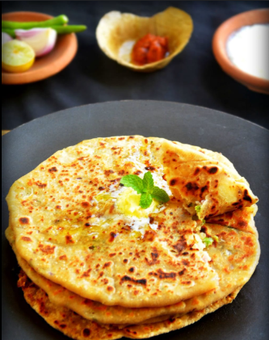

ALOO PARATHA
Description
A popular and savory Indian flatbread stuffed with a spiced mashed potato filling. Perfect for breakfast, brunch, or a light meal.
Ingredients
For the Dough:
- 2 cups Whole Wheat Flour (Atta)
- 1 tbsp Oil or Ghee
- Salt to taste
- Water, as needed
For the Filling:
- 3-4 medium Potatoes, boiled, peeled, and mashed
- 1 small Onion, finely chopped
- 1-2 Green Chilies, finely chopped (adjust to taste)
- 1/2 tsp Red Chili Powder (adjust to taste)
- 1/2 tsp Coriander Powder
- 1/4 tsp Turmeric Powder
- 1/4 tsp Garam Masala
- 1/4 tsp Dried Mango Powder (Amchur) (optional)
- Fresh Cilantro leaves, chopped
- Salt to taste
- Oil or Ghee, for cooking
Instructions
- Prepare the Dough: In a large bowl, mix the whole wheat flour, oil or ghee, and salt. Gradually add water and knead to form a smooth and soft dough. Cover and let it rest for at least 15-20 minutes.
- Prepare the Filling: In another bowl, combine the mashed potatoes, finely chopped onion, green chilies, red chili powder, coriander powder, turmeric powder, garam masala, dried mango powder (if using), chopped cilantro, and salt. Mix well to ensure all ingredients are evenly combined.
- Make the Parathas: Divide the dough into small, equal-sized balls. Similarly, divide the potato filling into equal-sized portions.
- Take one dough ball and roll it into a small disc (about 3-4 inches in diameter). Place a portion of the potato filling in the center of the disc.
- Bring the edges of the dough disc together and seal them in the center, ensuring the filling is completely enclosed